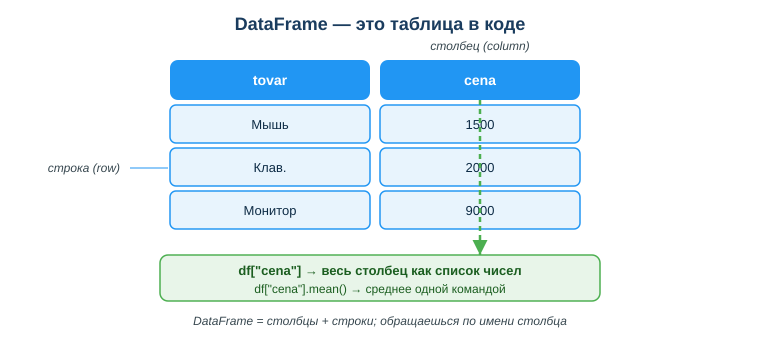
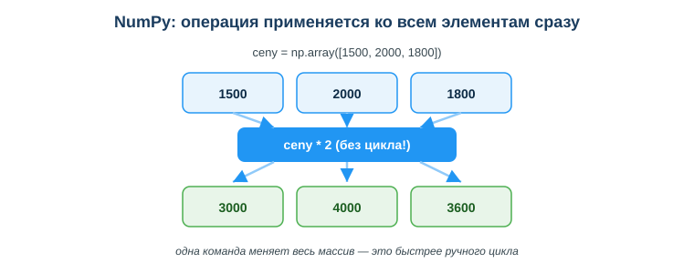

Дисциплина: Применение информационно-коммуникационных и цифровых технологий
Результат обучения: РО 2.3 — применение ИИ и цифровых технологий для работы с данными · Объём темы: 4 часа
Квалификация: 4S06130103 «Разработчик программного обеспечения»
df["cena"].mean() считает среднее, а поймёшь, почему библиотеки делают это быстрее тебя и как они устроены внутри.
Представь типичный рабочий день. Тебе скидывают файл orders.csv — тысяча строк с заказами интернет-магазина: товар, количество, сумма, город, дата. И просят к завтрашнему утру три цифры: средний чек, число «дорогих» заказов (дороже 5000) и список товаров, которые покупают чаще всего. Звучит как работа на вечер.
Первое, что приходит в голову новичку, — написать цикл. Пройтись for-ом по каждой строке, складывать суммы в переменную, делить на количество, заводить счётчик для дорогих заказов, собирать списки через append. Это работает — на десяти строках. Но на тысяче строк такой код становится длинным, медленным и хрупким: одна перепутанная переменная или сбитый отступ, и весь отчёт молча выдаёт неверное число. А ты этого даже не заметишь, потому что программа не упадёт — она просто посчитает не то.
В реальной работе так не делают. Подключают готовые библиотеки: NumPy — для быстрых расчётов над числами, и Pandas — для работы с таблицами. С ними одна строка заменяет целый цикл: df["summa"].mean() — и средний чек готов; df[df["summa"] > 5000] — и все дорогие заказы отобраны. Отчёт, на который ты заложил вечер, собирается за пару минут. Посмотри на схему «DataFrame — это таблица в коде» (приложение А): именно так Pandas видит твой файл — как таблицу со столбцами и строками, к каждому столбцу которой можно обратиться по имени.

Почему это важно лично тебе. Разработчик ПО постоянно достаёт данные из базы или файла и считает по ним показатели: сколько пользователей активны, какая средняя длительность сессии, какие товары не продаются. Это не «работа аналитика где-то рядом» — это часть твоей повседневной работы. В вакансиях на Python-разработчика и тем более на дата-инженера или ML-инженера Pandas и NumPy пишут в графе «обязательно», а не «будет плюсом» [4]. И это же — фундамент для следующих тем курса: визуализации данных (занятие 31) и анализа данных с помощью ИИ (занятие 32). Освоив Pandas, ты получаешь инструмент, который будешь использовать всю профессиональную жизнь.
После изучения темы ты сможешь:
mean, sum, max, min);mean(), sum(), max(), min(), count();NameError, KeyError) и предотвращать их.import numpy as np, import pandas as pd.Прежде чем разбирать NumPy и Pandas по отдельности, разберись с самим словом «библиотека» — иначе оно так и останется магическим заклинанием в начале файла.
Библиотека — это чужой готовый код, который ты подключаешь к своему. Кто-то однажды написал, отладил и проверил функции для работы с числами или таблицами, упаковал их и выложил в общий доступ. Ты пишешь одну строку import — и эти функции становятся доступны в твоей программе, как будто ты написал их сам. Тебе не нужно заново изобретать, как быстро посчитать среднее по миллиону чисел: это уже сделали за тебя, причём лучше, чем смог бы новичок.
Аналогия. Когда тебе нужно забить гвоздь, ты не выплавляешь молоток из руды — берёшь готовый. Библиотека — это готовый инструмент в твоём ящике. Язык Python из коробки умеет немного (списки, циклы, базовая математика), а специализированные задачи — расчёты, таблицы, графики, веб — закрываются библиотеками. Профессионализм разработчика во многом и состоит в том, чтобы знать, какая библиотека для какой задачи существует, и не писать руками то, что уже написано и проверено тысячами людей.
Подключают библиотеку командой import. Чаще всего — с коротким псевдонимом, чтобы не печатать длинное имя каждый раз:
import numpy as np # теперь NumPy доступен как np
import pandas as pd # теперь Pandas доступен как pdПсевдонимы np и pd — это не случайность и не твой личный выбор. Это общепринятое соглашение всего сообщества [5; 6]. В любом учебнике, в любом ответе на Stack Overflow, в любом чужом проекте ты увидишь именно np и pd. Пиши так же — тогда твой код будет понятен другим, а чужой код будет понятен тебе. Эти две строки почти всегда стоят в самом начале файла; забыть их — частая ошибка новичка, к которой мы вернёмся в разделе 6.
NumPy (от Numerical Python) — библиотека для быстрых вычислений над числами [6]. Её главный объект — массив, по-английски ndarray (n-dimensional array, многомерный массив). Создаётся он из обычного списка функцией np.array():
import numpy as np
ceny = np.array([1500, 2000, 1800])
print(ceny) # [1500 2000 1800]
print(type(ceny)) # <class 'numpy.ndarray'>На первый взгляд массив похож на обычный список Python. Разница — в том, что с ним можно делать. Главная суперсила NumPy в том, что операция применяется сразу ко всему массиву, без цикла. Это называется векторной операцией.
Сравни два способа удвоить каждую цену. Сначала так, как делал бы новичок без NumPy:
ceny = [1500, 2000, 1800]
udvoennye = []
for cena in ceny: # перебираем по одному
udvoennye.append(cena * 2)
print(udvoennye) # [3000, 4000, 3600]Четыре строки, явный цикл, вспомогательный список. А теперь с NumPy:
ceny = np.array([1500, 2000, 1800])
print(ceny * 2) # [3000 4000 3600]Одна строка. Никакого цикла. Ты просто пишешь ceny * 2, и NumPy сам применяет умножение к каждому элементу. Это и есть векторная операция: пишешь действие над всем массивом, а NumPy раскрывает его до действий над каждым элементом. Посмотри на схему «NumPy: операция применяется ко всем элементам сразу» (приложение Б): сверху исходные числа, в центре — операция ceny * 2, снизу — результат, где каждый элемент уже изменён. Стрелки показывают, что одна команда «спускается» сразу ко всем ячейкам.

Так же работают и расчёты целиком по массиву — для них у NumPy есть готовые методы:
ceny = np.array([1500, 2000, 1800])
print(ceny.mean()) # 1766.67 — среднее
print(ceny.sum()) # 5300 — сумма
print(ceny.max()) # 2000 — максимум
print(ceny.min()) # 1500 — минимумРазберём по шагам, что происходит в строке ceny.mean():
ceny — это массив [1500, 2000, 1800].mean() — метод «посчитай среднее арифметическое». Скобки означают вызов.1500 + 2000 + 1800 = 5300) и делит на их количество (5300 / 3 = 1766.67).print его выводит.Тебе не нужно писать ни суммирование, ни деление, ни подсчёт количества — всё это внутри метода mean(). Одна команда заменяет несколько строк ручного кода.
Почему это не просто короче, а ещё и быстрее. Здесь важный момент, который отличает понимание от зубрёжки. Когда ты пишешь цикл for на чистом Python, каждый его шаг — это работа интерпретатора Python: он по очереди берёт элемент, выполняет действие, берёт следующий. Это гибко, но медленно. NumPy же хранит числа компактно и выполняет операции над ними «оптом» на низком уровне (внутри библиотека написана на быстром языке Си) [6]. Поэтому на массиве из миллиона чисел arr.sum() отработает в десятки раз быстрее, чем ручной цикл. На трёх числах разницы ты не заметишь, но в реальной работе данные большие — и тогда векторные операции NumPy превращаются из «красивее» в «единственно разумно».
Запомни вывод этого раздела: NumPy — это про числа и скорость. Один массив, одна команда — расчёт над всеми элементами сразу.
NumPy отлично работает с «голыми» числами. Но реальные данные почти всегда живут в таблицах: строки — это записи (заказ, клиент, товар), столбцы — это признаки (сумма, имя, дата). Для таблиц есть Pandas — библиотека, построенная поверх NumPy и специально заточенная под табличные данные [5].
Главный объект Pandas — DataFrame. Проще всего понять его так:
Создать DataFrame можно из обычного словаря, где ключ — это имя столбца, а значение — список ячеек этого столбца:
import pandas as pd
data = {
"tovar": ["Мышь", "Клав.", "Монитор"],
"cena": [1500, 2000, 9000],
}
df = pd.DataFrame(data)
print(df)Вывод будет выглядеть как настоящая таблица:
tovar cena
0 Мышь 1500
1 Клав. 2000
2 Монитор 9000Разбери эту картинку внимательно, она ключевая:
tovar и cena. Их имена ты задал ключами словаря. На схеме (приложение А) это синие шапки сверху.0, 1, 2 слева. Pandas сам пронумеровал строки. По этому номеру можно обратиться к конкретной строке.То есть DataFrame — это не «куча данных», а структура с понятными координатами: «столбец cena, строка 2» — это цена монитора, 9000.
df["имя"] и что это возвращаетГлавная операция в Pandas, которую ты будешь делать постоянно, — обращение к столбцу по имени. Делается это так:
print(df["cena"])Вывод:
0 1500
1 2000
2 9000
Name: cena, dtype: int64Что произошло. Запись df["cena"] означает: «возьми из таблицы df весь столбец с именем cena». В ответ Pandas возвращает один столбец — объект, который называется Series. Series — это, по сути, столбец как список чисел, но «умный»: у него есть подписи строк (тот самый индекс 0, 1, 2) и встроенные методы расчёта. На схеме (приложение А) зелёный блок внизу как раз и показывает: df["cena"] → весь столбец как список чисел.
И вот здесь Pandas и NumPy соединяются. Раз столбец df["cena"] ведёт себя как массив чисел, к нему применимы те же методы расчёта — сразу по всему столбцу, без цикла:
print(df["cena"].mean()) # 4166.66... — средняя цена
print(df["cena"].sum()) # 12500 — сумма всех цен
print(df["cena"].max()) # 9000 — самый дорогой
print(df["cena"].min()) # 1500 — самый дешёвый
print(df["cena"].count()) # 3 — сколько значений в столбцеРазбери цепочку df["cena"].mean() по частям — это типовой шаблон, который ты будешь писать чаще всего:
df — твоя таблица.["cena"] — берём из неё столбец cena (получаем Series)..mean() — у этого столбца вызываем метод «посчитай среднее».Запомни эти пять методов столбца, они закрывают большинство задач:
| Метод | Что считает | Пример |
|---|---|---|
.mean() |
среднее арифметическое | средний чек |
.sum() |
сумму всех значений | общая выручка |
.max() |
наибольшее значение | самый дорогой заказ |
.min() |
наименьшее значение | самый дешёвый заказ |
.count() |
количество значений | сколько всего заказов |
Обрати внимание на разницу между .sum() и .count(), её часто путают: .sum() складывает сами числа (например, сумму всех цен), а .count() считает, сколько значений в столбце (сколько строк). Для столбца цен [1500, 2000, 9000] сумма равна 12500, а количество — 3.
До сих пор мы считали по всему столбцу. Но чаще нужно сначала отобрать строки по условию, а потом считать. Например: «оставь только дорогие заказы» или «покажи товары дороже 5000». В Pandas это делается одной командой — без цикла и без if.
Сначала посмотри, как делал бы новичок без Pandas:
dorogie = []
for i in range(len(df)): # перебираем строки по индексу
if df["cena"][i] >= 2000: # проверяем условие
dorogie.append(df.iloc[i]) # добавляем подходящиеДлинно, легко ошибиться. А теперь то же самое в Pandas:
dorogie = df[df["cena"] >= 2000]
print(dorogie)Вывод:
tovar cena
1 Клав. 2000
2 Монитор 9000Осталось две строки из трёх — те, где цена ≥ 2000. «Мышь» за 1500 отфильтрована. Разберём, как это устроено, потому что запись df[df["cena"] >= 2000] поначалу выглядит странно — таблица внутри квадратных скобок самой таблицы.
Секрет — в двух шагах. Выполни внутреннюю часть отдельно:
print(df["cena"] >= 2000)Вывод:
0 False
1 True
2 True
Name: cena, dtype: boolВидишь? Сравнение df["cena"] >= 2000 — это тоже векторная операция: оно применилось к каждой ячейке столбца и вернуло столбец из True/False. Это называется маской: для каждой строки записано, проходит она условие (True) или нет (False).
Теперь второй шаг. Когда ты пишешь df[маска], Pandas оставляет только те строки, против которых стоит True, и выбрасывает строки с False. Поэтому:
df["cena"] >= 2000 строит маску [False, True, True];df[...] применяет маску и оставляет строки 1 и 2.Это называется булева индексация (boolean indexing) [5]. Одна короткая запись делает то, на что в ручном коде ушёл бы цикл с условием. Меньше кода — меньше места для ошибки.
Вернёмся к задаче из введения: тебе дали таблицу заказов со столбцом summa, нужны средний чек и число заказов дороже 5000. Теперь у тебя есть все детали, чтобы решить её красиво:
import pandas as pd
df = pd.read_csv("orders.csv") # 1. загрузили таблицу из файла
sredniy = df["summa"].mean() # 2. средний чек — одной командой
mnogo = len(df[df["summa"] > 5000]) # 3. число дорогих заказов
print("Средний чек:", sredniy)
print("Дорогих заказов:", mnogo)Разбор по шагам:
pd.read_csv("orders.csv") — Pandas сам читает файл CSV и превращает его в DataFrame. Никаких ручных циклов чтения строк.df["summa"].mean() — берём столбец summa и считаем по нему среднее. Это весь твой «средний чек».df[df["summa"] > 5000] — фильтруем строки, где сумма больше 5000; len(...) считает, сколько таких строк осталось.Три строки осмысленного кода вместо вечера с циклами. И это масштабируется: что на тысяче заказов, что на миллионе код один и тот же — меняется только размер файла, а не твоя программа.
Раз есть две библиотеки, логичный вопрос: какую брать? Простое правило:
На практике они работают в паре: Pandas хранит данные таблицы, а внутри для расчётов опирается на NumPy [5; 6]. Поэтому методы .mean(), .sum() и векторные операции выглядят одинаково и там, и там — это не совпадение, а одна и та же машина расчётов под капотом. Для тебя как начинающего ориентир такой: данные пришли таблицей (файл, выгрузка из базы) — бери Pandas; нужно посчитать по чистому ряду чисел или ты идёшь в сторону ML — бери NumPy.
Пример 1 — средний балл группы (NumPy).
Дан список оценок за контрольную. Нужно среднее и максимум.
import numpy as np
ocenki = np.array([4, 5, 3, 5, 4, 2, 5])
print("Средний балл:", ocenki.mean()) # 4.0
print("Максимум:", ocenki.max()) # 5
print("Двоек:", (ocenki == 2).sum()) # 1Разбор. Первые две команды — обычные расчёты по массиву. Третья строка хитрее и показывает мощь векторных операций: ocenki == 2 строит маску [False, False, False, False, False, True, False], а .sum() складывает её. В Python True считается за 1, False за 0, поэтому сумма маски — это количество двоек. Так одной строкой считают, сколько элементов удовлетворяют условию.
Пример 2 — отчёт по заказам (Pandas).
import pandas as pd
data = {
"tovar": ["Мышь", "Клав.", "Монитор", "Ноутбук"],
"cena": [1500, 2000, 9000, 45000],
"kol": [10, 5, 3, 1],
}
df = pd.DataFrame(data)
print("Средняя цена:", df["cena"].mean()) # 14375.0
print("Всего товаров на сумму:", (df["cena"] * df["kol"]).sum())
dorogie = df[df["cena"] >= 9000]
print(dorogie[["tovar", "cena"]])Разбор. Здесь сразу несколько приёмов. df["cena"] * df["kol"] — поэлементное умножение двух столбцов (цена × количество для каждой строки), а .sum() суммирует результат — получаем стоимость всех позиций. Фильтр df["cena"] >= 9000 оставляет монитор и ноутбук. Запись dorogie[["tovar", "cena"]] (двойные скобки!) выбирает из отфильтрованной таблицы сразу два столбца — так строят аккуратный отчёт только из нужных колонок.
Пример 3 — проверка имён столбцов перед работой.
import pandas as pd
df = pd.read_csv("orders.csv")
print(df.columns) # Index(['tovar', 'summa', 'gorod'], dtype='object')
print(df.head()) # первые 5 строк — посмотреть, как выглядят данныеРазбор. Прежде чем считать, всегда смотри, что за данные пришли. df.columns показывает точные имена столбцов — копируй имя оттуда, а не пиши по памяти (это спасает от ошибки регистра из раздела 6). df.head() показывает первые строки — так ты сразу видишь, в каком виде данные и нет ли в них мусора. Эти две команды — обязательный первый шаг при работе с любым новым файлом.
import numpy as np или import pandas as pd. Почему: без импорта Python не знает имён np и pd и выдаёт NameError: name 'pd' is not defined. Как правильно: ставь обе строки импорта в самое начало файла, до любого использования библиотек.df["Cena"], когда столбец называется cena. Почему: имена столбцов в Pandas чувствительны к регистру; "Cena" и "cena" — разные имена, и Pandas выдаёт KeyError: 'Cena'. Как правильно: проверяй точные имена через df.columns и копируй имя оттуда, а не пиши по памяти..sum() и .count(). Почему: .sum() складывает сами значения, а .count() считает их количество — это разные числа. Как правильно: «сколько всего» — это .count(); «на какую сумму» — это .sum().for там, где хватит одной векторной операции. Почему: код становится длиннее, медленнее и в нём легче ошибиться. Как правильно: сначала спроси себя «нет ли готового метода или векторной операции?» — почти всегда есть.df.head() и df.columns, убедись, что данные те, что ты думаешь.import pandas as pd, при необходимости import numpy as np.df = pd.read_csv("файл.csv") (или собери из словаря через pd.DataFrame).df.head() — как выглядят строки; df.columns — точные имена столбцов.df["поле"].mean(), .sum(), .max(), .min(), .count().df[df["поле"] > значение] — оставить нужные записи.import ... as ... подключает его. Стандартные псевдонимы — np и pd.np.array([...]), операции применяются ко всем элементам сразу (векторные операции), без цикла.df["имя"]; к нему применимы методы mean(), sum(), max(), min(), count().df[df["поле"] > значение]: условие строит маску из True/False, по ней отбираются строки.NameError) и неверный регистр имени столбца (KeyError); лечатся проверкой через df.columns.np, pd)?arr.sum() на большом массиве быстрее, чем ручной цикл for?df["cena"] и какие методы расчёта к ней применимы?df[df["cena"] >= 2000]. Что такое маска?.sum() и .count()? Приведи пример, где они дают разные числа.NameError и KeyError и как их предотвратить?0, 1, 2, …).import.True/False, задающий, какие строки оставить при фильтрации.df["cena"].mean()).numpy → np).Основная литература:
Дополнительно:
Электронные ресурсы и официальная документация:
Нормативный контекст РК (при работе с реальными данными):
assets/30_shema-dataframe.svg. Синие шапки сверху — столбцы (tovar, cena); голубые ячейки — строки; числа слева — индекс. Зелёный блок внизу показывает: df["cena"] возвращает весь столбец как список чисел, а df["cena"].mean() считает среднее одной командой.assets/30_shema-numpy-vektor.svg. Сверху исходный массив [1500, 2000, 1800], в центре операция ceny * 2, снизу результат [3000, 4000, 3600]. Стрелки показывают: одна команда меняет сразу все элементы — это и есть векторная операция, которая быстрее ручного цикла.Материал подготовлен на основе урока темы (urok.md) и приведённых в конце источников; он расширяет и углубляет содержание урока для самостоятельного изучения. Источники приведены главами и ссылками (без номеров страниц).
Материал разработан рабочей группой ТОО «Колледж Хекслет Казахстан» и одобрен к использованию в обучении решением Педагогического совета.